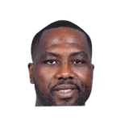
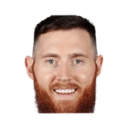
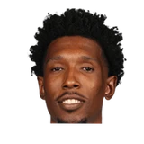

Joel Embiid:
“But it seems like the past couple games, like with the way I play, our setup,[Brown] always has me starting on the perimeter … and it just really frustrates me. My body feels great, and it’s just I haven’t been playing well.”
20 quotes about Brett Brown from 14 players, coaches and executives, newest first. Each one links to its original source.
Joel Embiid:
“But it seems like the past couple games, like with the way I play, our setup,[Brown] always has me starting on the perimeter … and it just really frustrates me. My body feels great, and it’s just I haven’t been playing well.”
RC Buford:
“I think we had many coaches over the last 10 years who could have stepped into that role. Ime Udoka was with us, along with James Borrego, Brett Brown, Mike Budenholzer, and Will Hardy. There were many people with us who could have stepped into that role, but the longer Coach Pop stayed, the more those coaches moved on to other opportunities. When we needed Mitch to step up, he did so in a big way. It was incredibly emotional for him to take on that role. ‘Interim’ is probably the wrong word, because at the time of Pop’s stroke, we didn’t know whether Pop could come back. Mitch had that year to show the players—and all of us—who he could be as a coach.”
Spurs coachGregg Popovich on the recent surge by the Philadelphia 76ers, a team led by former assistant Brett Brown:
“It's one of my joys in life to watch them win basketball games because if there's any team that deserves it, it's those guys. They've had it really tough for all the obvious reasons, and there's nobody in our business that is more positive, and more day to day upbeat and ready to teach and love than Brett Brown. He's a unique, unique guy.”
What Brett Brown has said about other players and coaches →

Elton Brand on Brett Brown2 quotes
Aron Baynes1 quote
Josh Richardson1 quoteRC Buford:
“I think we had many coaches over the last 10 years who could have stepped into that role. Ime Udoka was with us, along with James Borrego, Brett Brown, Mike Budenholzer, and Will Hardy. There were many people with us who could have stepped into that role, but the longer Coach Pop stayed, the more those coaches moved on to other opportunities. When we needed Mitch to step up, he did so in a big way. It was incredibly emotional for him to take on that role. ‘Interim’ is probably the wrong word, because at the time of Pop’s stroke, we didn’t know whether Pop could come back. Mitch had that year to show the players—and all of us—who he could be as a coach.”
Noah Levick:Josh Richardson on Brett Brown:
“He's a good guy, he's a good man. ... I don't think we had enough accountability this season and that was part of our problem.”
“I think it’s going to be easier to build on after this. Like Coach [Brown] said, being at a B, I feel like I’m definitely there, and once we start playing, it’s going to fall into place,”
Kyle Neubeck:Brand on Brown and potentially moving Horford to bench:
“Brett has been empowered to make any decision he feels he needs to win.”
“[It] starts with a specific skill that [Brett Brown] can look down the bench and say, 'Alright, I need defense, I trust him. Oh, I need some shotmaking, the defense might not be there, something else may not be there, but I know I can get this from this rookie.'”
Butler on Brown:
“(Our relationship) is constantly growing, that's for sure... I think he realized how different of a human being I am. How I can be difficult at times, but I swear it's from a good place... He has a huge heart. He's a great, great dude that works incredibly hard.”
Joel Embiid on Brett Brown rumors:
“I just thought (the rumor) was bullshit. He's done a fantastic job. He's been there through everything... I don't think he should have anything to worry about. He's an amazing coach and a better person.”
Kyle Neubeck:Pop on Brown calling him the best coach ever:
“He’s so full of shit. That’s why I got rid of him. Kiss ass.”
Joel Embiid:
“But it seems like the past couple games, like with the way I play, our setup,[Brown] always has me starting on the perimeter … and it just really frustrates me. My body feels great, and it’s just I haven’t been playing well.”
And to hear Butler tell it, it wasn't exactly a complicated process to get him into that attacking mindset.
“Coach Brown called me last night, like, 'Hey, I remember one time you were in this building and you scored 50,' and he was like, 'Do that.' I was like, 'OK.'”
Monty Williams has spent nearly his entire life in basketball, as a player or a coach, but tragedy struck a little over two years ago and it wasn't clear when he would return to the game.
“It's a great time for me to get back to full-time coaching. It was Brett [Brown], it was the team. I've played here before so I kind of know the culture of the city,”
James is already a fan of Brett Brown, the Sixers’ coach.
“The organization has done a great job believing in Brett Brown’s system, believing in what he wanted to do and they gave him time,”
“We had guys from all over the world. I actually had a comfort factor there, because I had played for Brett Brown for a few years when he was an assistant there, and Patty Mills I had played with since I was 15 (in Australia). So I had a good teammate there. “Just the leadership from the top down, being around the way those guys consistently did it night in and night out, I realized why they’re such a good team and why they’ve been who they are for the last two decades. Their work routine, and everyone is so coachable. From the top down there weren’t any barriers. Everyone bought into the system. It was good to be in there.”
“And we started running post actions and then we started running pick-and-roll actions. And it was just fun to be around Coach Brown and see his passion for the game and kind of talk hoops with him.”
“With Brett Brown, I had a great relationship when he was here. He was my guy. The fact that he wanted to sign me at this stage of my career and tell me he thought I was important to his project was very, very flattering.”
Jessica Camerato:Evan Turner on Sixers' recent success-
“I’m a big fan of Brett Brown... I really wish the best for them. I’m glad it’s starting to go upward.”
Spurs coachGregg Popovich on the recent surge by the Philadelphia 76ers, a team led by former assistant Brett Brown:
“It's one of my joys in life to watch them win basketball games because if there's any team that deserves it, it's those guys. They've had it really tough for all the obvious reasons, and there's nobody in our business that is more positive, and more day to day upbeat and ready to teach and love than Brett Brown. He's a unique, unique guy.”
“I know I’m not the type of player that’s DNP.But that’s what it is right now. Coach Brown has been phenomenal with communicating with me. I know in the long run, I’ll be fine.”
Derek Bodner:Jahlil Okafor on his dad heckling Brown:
“I don't know why you guys are worried about my dad. He's not in the NBA, he's not on the team.”
Jeff McDonald:Pop on beating B Brown by 51:
“What’s tough is I know he’s a hell of a coach, but it’s not a fair battle talent for talent. It’s ridiculous”